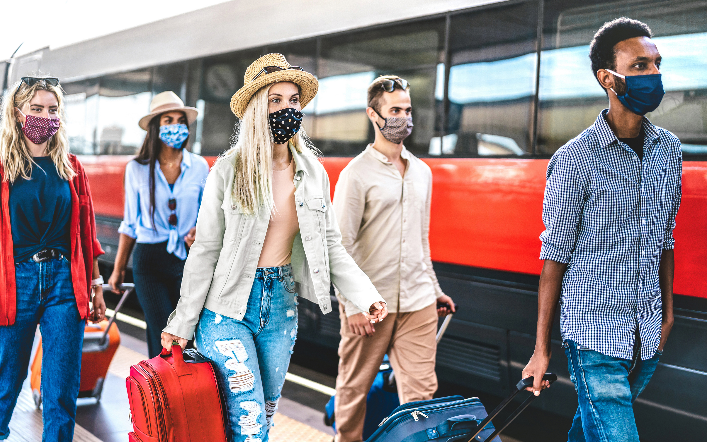
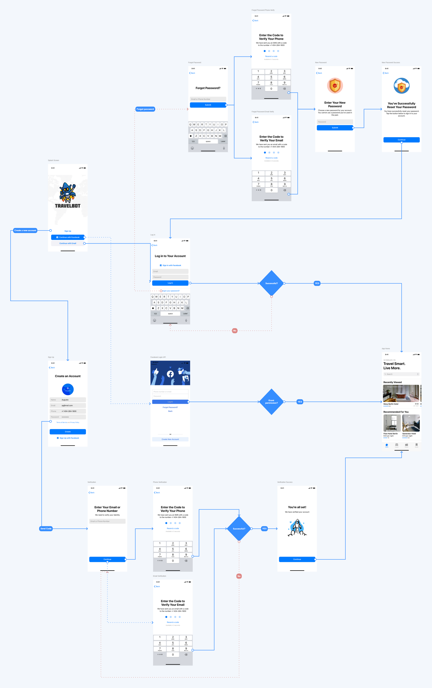

Travel Mobile App Case Study
TravelBot is a robo-travel agent mobile app that gives travelers a one-stop-shop experience on curated travel experiences.
5
Interviews
10
Usability Tests
6
Iterations
20
Cups of Coffee
Overview
The Problem
Travelers are searching for an all-in-one platform that allows them to easily book flights, hotels and cars as well as provide location-specific itineraries through a social/collaborative integration.
The Solution
TravelBot is a robo-travel agent mobile app that gives travelers a one-stop-shop experience on curated travel experiences.
Tools Used
- Adobe Creative Cloud
- Figma
- InVision
- Miro
- Overflow

A Framework For Innovation
Double Diamond Model
The design thinking process is iterative, flexible, and focused on collaboration between designers and users. The design thinking process can transform the way organizations develop products, services, processes, and strategies. Also, it can develop people’s creative potential and spur innovation.

Industry Analysis
COVID-19 Crisis
“Over the past decades, travel saw consistent growth even when financial crises and pandemics affected the global economy. Today’s situation is different.” Source: The Travel Industry Turned Upside Down, Skift Research in Partnership with McKinsey & Company (September 2020)
Initial Research Insights
Although the travel industry has seen major hardship during the COVID-19 pandemic, there has been significant leadership from companies that are pivoting their strategies to maintain long-term growth.
4 Key Factors:
Demand
People want to travel again and they are booking.
Leisure
Travelers are forced to prioritize relaxing spaces.
Location
Work-from-anywhere trend is on the rise.
Price
Non-price factors have increased importance.
Phase 1: User Research
Initial Interview Process
5 interviews lasting no more than 20 minutes were conducted in order to learn more about travel habits, patterns, and behaviors from a variety of personality types. The names of the interviewees have been changed for anonymity. “Sheri” is a mom of 2 who likes to travel, but feels burdened by the difficulty of creating an itinerary for her whole family. “Mark” loves the outdoors and hiking with friends, but has a hard time finding time to book his vacations due to his busy work schedule. “Aubrey” enjoys spending money for fun activities and travel, but gets overwhelmed with all of the options and various applications. “David” is a first-class traveler who enjoys luxury amenities, but isn’t tech savvy and relies on a in-person travel agent to ensure his trip goes smoothly. “Rebecca” appreciates cleanliness and safety while traveling to lesser known areas. She uses all the tech her phone will allow, but is looking for an all-in-one travel solution.
Affinity Diagram
This data was then categorized into topics:
- Locations
- Budget
- Activities
- Pain Points
- Research
Empathy Map
Pains:
- Limited time to plan
- Hard to stay within budget
- Difficult to find affordable food
- Stressful to book affordable family resorts
Gains:
- Able to splurge
- Finds resorts that offer value
- Able to travel greater distance with rental car
- Spends quality time with family
User Persona
I create a realistic representation of the key user segment I wanted to design for. This was based on qualitative and some quantitative user research. It allowed me to begin empathizing with the user as I moved into the Define phase.
Phase 2: Definition & Synthesis
User Insight
After conducting my research, I was interested in further understanding what my user’s needs were. I began developing my user insight statement to allow me to get in the mind of my user.
“Draft 1: Sophie needs help booking her travel arrangements because it’s hard to manage multiple apps and websites for a single trip.”
During a feedback session, I was able to iterate my insight statement to further my understanding of the user persona that has been developed throughout the interview process.
“Draft 2: Sophie, who is family-oriented with a busy work schedule, needs a quick way to research and book travel arrangements for her family vacations because it is hard to manage multiple resources efficiently with her current process that she’s developed out of frustration.”

How Might We Questions
You can write here as much as you want, this text will always look nice, whether you write longer paragraphs or just a few words. Click here and try it out.
RESEARCHING FOR TRAVEL TAKES TOO MUCH TIME.
Impact: To decrease the amount of time it takes to research travel experiences.
“How might we streamline the travel research process that users go through?”
BOOKING TRAVEL ARRANGEMENTS CAN BE COMPLICATED.
Impact: To make the travel booking process more efficient.
“How might we simplify the way users interact with a travel app?”
Impact: To consolidate other travel service functions into a single app format.
“How might we integrate into other travel services?”
Insight Discovery
During user interviews, I’ve discovered that Sophie, who is family-oriented and has a busy work schedule, needs a quick way to book travel arrangements for her family vacations. Therefore, I believe that making the travel booking process more efficient would help simplify Sophie’s current process and that I might be able to help if I provide automation services. I might do this by leveraging existing APIs (Application Programming Interfaces) to bring existing travel services closer to the user. Doing this will allow TravelBot to provide an automated travel booking process that enables the user to have a one-stop-shop experience.

Problem Statement
TravelBot was designed to achieve a one-stop-shop solution for researching and booking travel arrangements. We have observed through user insight discovery that our service needs to collaborate with other companies in order to streamline the booking process, which is causing a development roadblock to our business. How might we integrate existing structures into TravelBot so that our customers are able to successfully research/book travel arrangements based on usability factors?

Brainstorming
I Like...
that TravelBot is simple and easy to usethat TravelBot allows me to research and book at the same time
that TravelBot shows me reviews
that TravelBot saves me time
I Wish...
I could share my itinerary with friends and familyI could manage other services in one place
I could chat with my group
I could be recommended curated experiences
What if...
TravelBot could book trips for youTravelBot could recommend deals based on my schedule
TravelBot had a rewards system
TravelBot had a referral program
How, Now, Wow
Using this feature prioritization matrix, I was able to better understand what to tackle first based on the ratio of difficulty to innovation.

Value Proposition Statement
TravelBot: Travel Smart. Live More.
"Quickly automate your travel arrangements in one, simple place so you can save time and live more."Using a Madlib format, I conceptualized a value proposition statement that addresses how TravelBot could help users and why it could potentially compete with other apps.
"My organization TravelBot LLC is developing a mobile app to help travelers automate and manage their travel booking experience quickly and efficiently so that they have more time to experience life.
We're better than our competition because we offer a unique solution that consolidates multiple aspects of booking travel arrangements into one, simple app.
We're believable because our ability to integrate into 3rd parties allows us to provide a one-stop-shop experience while maintaining professional relationships with other travel booking services."

Phase 3: Ideation
Initial User Flow
Onboarding Quickly & Efficiently
To support the need for a fast process, I began drafting a simple user flow to help visualize the various paths a user could potentially take.
Sketches
To help get my ideas out, I turned to paper sketching.

This gave me some direction to start wireframing...
Low-Fidelity Wireframes
It was useful for me to transition my sketches to low-fidelity wireframes in order to start forming the skeleton of the app. I used Figma to create the onboarding process wireframes leading up to the app Home Screen.


Phase 4: Prototyping
Low-Fidelity Prototype
User Testing Plan
Usability Testing
By creating a plan, this allowed me to conduct repeatable tests with users in order to have a consistent approach.
- TASK 1: Create an account with email
- TASK 2: Create an account with social media account
- TASK 3: Sign in with email
- TASK 4: Sign in with social media account
- TASK 5: Reset password and create a new one
User Flow Iterations
Onboarding Process - User Flow
Mid-Fidelity Prototype
After iterating my user flows, I started to add color...
User Testing
Utilzing The User Testing Plan
I conducted a final round of usability testing on the mid-fidelity prototype to gather data moving forward to the final high fidelity prototype.
Insight Discovery: Users wanted a personalized, interactive walkthrough experience.High-Fidelity Prototype
I iterated my mid-fidelity prototype to incorporate iOS Design Principles utilizing Human Interface Guidelines.
Conclusion
What have I learned?
This case study has taught me how to conduct user research to further understand how I might be able to offer a travel booking solution within a large competitive market.
Through the defining and ideation stages, I was able to hone in on who I might want to target within this market which ultimately contributed to my development of a value proposition.
During the prototyping phase, I was interested in conducting user tests and using the feedback received to iterate on top of my existing mockups allowing me to get closer to a final prototype.